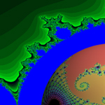
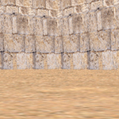
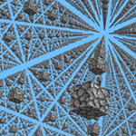

|  |
This one takes some time to load. Loading progress can be tracked in the pages title. If it takes too long to load, try making the window size smaller. Move your mouse around the Mandelbrot set in the background to create different Julia sets on the ball. You can also zoom in and out the ball with your mousewheel, or drag the ball to rotate it. |
|  |
You can move around with WASD and jump with space. Mouse button toggles mouse control over the camera. Currently, there's no way for the browser to capture the mouse, so true FPS control cannot be replicated. Here, I tried to recreate an FPS camera and as you may have noticed, it's highly inpsired by CS 1.6. I might add boxes and various objects in the future. Textures are from the map de_dust. |
|  |
This is yet another experiment inspired by
this Minecraft video. Number of cubes can be changed with U / I. Distance between cubes can be changed with J / K. You can again move around with WASD and look around with the mouse. |